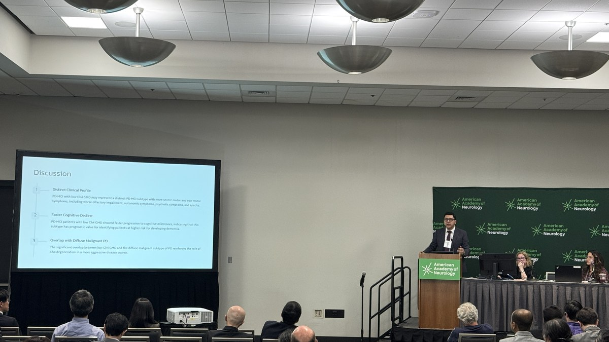
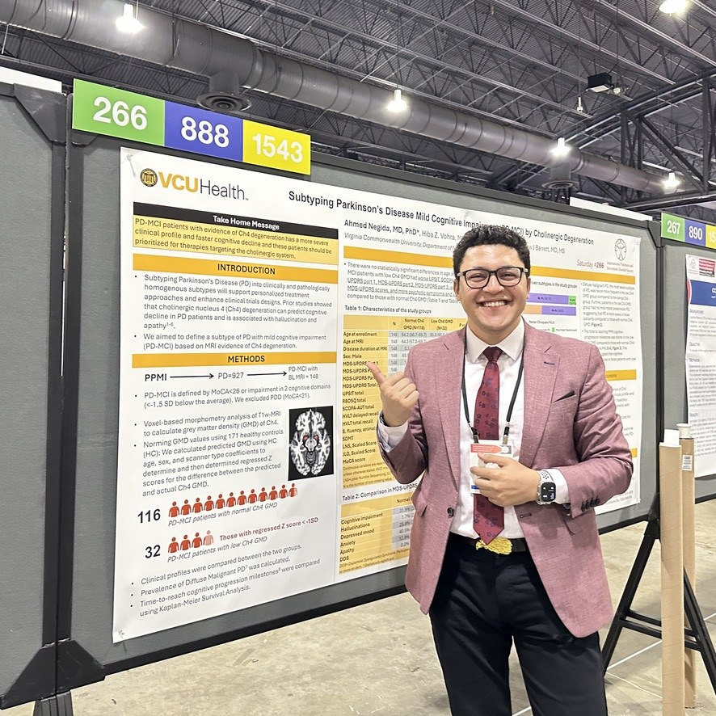

Ahmed Negida
Postdoctoral Scholar, Parkinson's and Movement Disorders Center
Department of Neurology, Virginia Commonwealth University, Richmond, VA
- Emailahmed.negida@vcuhealth.org · ahmed.said.negida@gmail.com
- ORCID0000-0001-5363-6369
- ScholarGoogle Scholar · 8,955 citations · h-index 46
- Webnegidamd.github.io · GitHub
Education and Training
IMPACT-AD Fellowship
Institute on Methods and Protocols for Advancement of Clinical Trials in ADRD · NIA and Alzheimer's Association
Ph.D. in Biomedical Sciences
University of Portsmouth · United Kingdom
PhD advisor: Matthew O. Parker, PhD. Dissertation: "The Hope and the Hype in Parkinson's Disease Treatments" — meta-research, evidence synthesis, and critical appraisal of neuroprotective interventions.
M.B.B.Ch. in Medicine and Surgery (equivalent to MD)
Zagazig University Faculty of Medicine · Egypt
Academic and Research Appointments
Postdoctoral Scholar
VCU Parkinson's & Movement Disorders Center, Department of Neurology · Richmond, VA
- Built a multimodal Ch4 MRI signature (T1-weighted gray-matter density and diffusion free water), now extended with resting-state fMRI across PD, DLB, and AD, and identified a PD-MCI subtype with MRI evidence of cholinergic nucleus 4 degeneration
- Developed EEG-based biomarkers for cognitive fluctuations in Lewy body dementia, combining NASA's Psychomotor Vigilance Test with resting-state and task-based EEG
- Led PPMI, NACC, and PDBP database studies stratifying PD, LBD, and AD patients, including 10-year progression patterns across PD subtypes
- Built structural, functional, and diffusion MRI pipelines, including DTI-ALPS and white matter hyperintensity quantification for glymphatic–vascular studies
- Generated pilot data and contributed study design, biostatistical planning, and the multimodal Ch4 MRI pipeline to the funded NIH/NINDS R01 NS142622
Research Fellow
Harvard Medical School, Department of Global Health and Social Medicine · Boston, MA
- Assessed global neurological care delivery systems through systematic data collection
- Quantified social and environmental determinants of neurological health disparities
- Applied external validation methods for financial risk prediction tools in low-income settings
- Led the development of CHYSPR guidelines in LMICs (first author, www.chyspr.org)
- Produced peer-reviewed outputs informing WHO and regional health policy decisions
Research Fellow
Bahçeşehir University, Department of Neurological Surgery · Istanbul, Turkey
- Evaluated deep brain stimulation outcomes in Parkinson's and Huntington's disease patients
- Analyzed clinical and neuropsychological endpoints using advanced statistical methods
Clinical Research Assistant
Epidemiology Department, Egyptian Liver Research Institute and Hospital · Mansoura, Egypt
Research Support
Contributing role as a postdoctoral researcher on NIH awards led by Matthew J. Barrett, MD, MS (VCU).
Postdoctoral Salary Support (PI: Matthew J. Barrett, MD, MS)
Role: Postdoctoral Researcher
Contribution: Generated pilot data; contributed to study design, biostatistical planning, and the EEG/neuroimaging analysis sections, including the multimodal Ch4 MRI pipeline; drafted portions of the application.
Role: Postdoctoral Researcher
Contribution: EEG and neuroimaging analysis; manuscript preparation.
Independent Projects
Role: Chair of the writing group for this secondary analysis (not the parent trial), in collaboration with Ai-Ling Lin, PhD (University of Missouri)
Scope: Approved access to U.S. POINTER trial imaging data. No funding is attached to this approval.
Data Resources
A4, ADNI (2–5), ADNI-DoD, AIBL, AMP-PD (Tier 1), Critical Path for Parkinson's (CPP), NACC, OASIS-3, PDBP, and PPMI; plus the VCU multimodal discovery cohort (n = 111).
Publications
170+ peer-reviewed publications in total (8,955 citations; h-index 46; i10-index 109 on Google Scholar), including 66 systematic reviews, meta-analyses, and scoping reviews, 36 of them senior-author papers led by trainees in my research-training program. Full list on ORCID and Google Scholar.
* Trainee I mentored · (first) / (senior): my author position
Cholinergic Imaging and EEG Biomarkers
Parkinson's Disease Subtypes and Progression
Treatment Patterns in Dementia and Movement Disorders
Other Clinical Studies
Multicenter Consortium Study (Co-Principal Investigator)
Reviews and Evidence Synthesis (Selected)
Book Chapter
Negida A, et al. Chapter 14: Epidemiology and risk factors of Parkinson's disease. In: Essential Guide to Neurodegenerative Disorders. Academic Press, 2025; pp 225–234.
Research Software
Open-source and web-deployed tools
Cholinergic Imaging and EEG
PD-MCI Ch4 Subtyping Tool
Imaging-based subtype tool for PD-MCI using cholinergic nucleus 4 (NBM) gray matter density. Helps identify patients with cholinergic vulnerability markers for treatment selection.
Negida-FE-Toolbox
MATLAB toolbox for dominant frequency-based EEG feature extraction, released from the NIH R21 AG077469 study of cognitive fluctuations in Lewy body disease. Automated spectral analysis and biomarker pipelines for AD, LBD, and PD cohorts.
Disease Subtyping and Progression
PD Subtyping Tool
Clinical, pathological, and data-driven subtyping of Parkinson's disease. Disease-duration–specific percentiles (PPMI, N = 1,030) classify patients as diffuse-malignant, intermediate, or mild motor-predominant for real-time trial stratification.
Neuroimaging Methods
Negida-DTI-ALPS
DTI-ALPS pipeline for perivascular (glymphatic) diffusivity that uses ANTs SyN and T1-based boundary-based registration to correct ROI misplacement under high head rotation. Validated against the reference alps.sh toolbox in 106 diffusion-MRI datasets (r = 0.96 for mean ALPS); MIT-licensed.
CNN-PD-3D
Convolutional neural network for automated Parkinson's Disease detection from structural 3D T1-weighted MRI. End-to-end pipeline from preprocessing to classification with interpretability visualization.
Vol-HD
Online calculator for predicting striatal volumes in Huntington's Disease patients using demographic and clinical variables, enabling pre-screening for clinical trials of intrastriatal gene therapies.
Neuroimaging Pipelines
Comprehensive pipelines for structural, functional, and diffusion MRI analysis including VBM, cortical thickness, DTI-ALPS for glymphatic function, and multimodal integration.
Evidence Synthesis
Meta-Analysis Accelerator
Comprehensive statistical conversion tool for systematic reviews with 21 conversion functions including median/IQR to mean/SD, SEM to SD, and CI to SD for one and two groups.
Meta-analysis.io
Full-featured platform for meta-analyses with statistical analysis and visualization. Supports standard meta-analysis, DTA, meta-regression, subgroup analysis, and publication bias assessment.
Invited Lectures and Presentations


Invited Lectures (Selected)
Conference Presentations (Selected from 100+)
Additional presentations at MDS, AAN, WFNS, WSO, EANS, and other international conferences (2014–2026).
Teaching and Mentorship
Mentorship Track Record
I have mentored 50+ junior researchers to first-author publications in peer-reviewed journals, using a model built around staged project scoping, weekly writing accountability, and graduated independence, and have supervised graduate and undergraduate students in neuroimaging analysis, machine learning, and systematic reviews.
Named mentees: Hazem Ghaith, MD (Postdoctoral Scholar, Department of Neurological Surgery, Oregon Health & Science University) and Hussien Abdelgawad, MD (Research Scientist, University of Arizona; Assistant Research Professor, Mayo Clinic Arizona). Further mentees have first-authored peer-reviewed papers across academic medical centers in Europe and the Middle East.
Negida Research Academy
Founded in 2014, Negida Research Academy is a global virtual training platform in clinical research methods: study design, biostatistics, systematic reviews, meta-analysis, scientific writing, and grant preparation. It runs two structured cohort-based training camps each year, each training approximately 1,200 researchers over 8–12 weeks. Author of the Negida Handbook of Clinical Research.
35,000+ total trainees · 20+ countries · 2,500+ active members
Global Research Training
Most Academy trainees work in low- and middle-income countries in the Middle East, Africa, and South Asia. I developed the first neuroimaging analysis course in Arabic (MRI preprocessing, VBM, and fMRI with MATLAB/SPM12/CAT12), and in 2022 I provided free, specialized training to African medical students affected by the war in Ukraine; their work resulted in a peer-reviewed publication (PMID: 38087277). In the Global NeuroSurg Research Collaborative, investigators from low- and middle-income countries hold authorship and leadership roles.
Courses Developed & Prepared to Teach
- Neuroscience: Systems neuroscience, cognitive neuroscience, neurodegenerative diseases
- Neuroimaging and EEG Methods: Neuroimaging methods, EEG signal processing, multimodal data integration
- Clinical Research Methods: Study design, biostatistics, systematic reviews, meta-analysis, clinical trials
- Scientific Writing: Grant writing, manuscript preparation, peer review
Honors, Leadership, and Service
Honors and Awards
Media: the PD-MCI Ch4 subtype study was covered by Neurology Today (2024).
Research Network Leadership
Co-Founder & Global Research Lead Coordinator, Global NeuroSurg Research Collaborative, Oregon Health & Science University (2018–present). International network of 2,000+ investigators in 50+ countries; co-principal investigator, steering committee, and writing group of GNS-I, a prospective study of 2,165 patients with traumatic brain injury at 100 hospitals in 29 countries (Nature Medicine, 2026). Network PI: Ahmed M.T. Raslan, MD.
Regional Lead, North African Countries, Global PaedSurg Study, King's College London (2018–2020)
National Lead, Egypt, GlobalSurg-I Study, Royal College of Surgeons, London (2014–2015); 27 hospitals
Professional Service
Guidelines Development
Member, Education, Research, and Guidelines Development Committees, North American Neuromodulation Society (2023–present)
Member, European Association of Neurosurgical Societies Guidelines Committee
Lead Author, Global CHYSPR guidelines for spina bifida and hydrocephalus in low- and middle-income countries (chyspr.org), endorsed by 30+ global institutions
Grant Review
Ad hoc reviewer, VCU Parkinson's & Movement Disorders Center Internal Pilot Grants (2025)
Ad hoc reviewer, Wright Center for Clinical and Translational Research Pilot Grants (2025)
Editorial Service
Editorial Boards: Therapeutic Advances in Neurological Disorders; Frontiers in Neurology (Dementia, Neurodegenerative Diseases, Neurotrauma, Experimental Therapeutics); PLOS ONE; Current Neuropharmacology; Frontiers in Pain Research; Frontiers in Pediatrics; Medicine; Pain Research and Management
Ad-hoc Reviewer: Nature Scientific Reports, BMJ JNNP, BMC Neurology, BMC Public Health, Frontiers in Medicine/Neuroscience/Pharmacology, World Neurosurgery, and more (150+ verified reviews on Web of Science)
Conference Service
Session Chair, “Global Research Collaboratives,” XVII World Congress of Neurosurgery (WFNS), Bogotá, Colombia (2022)
Professional Memberships
International Parkinson's & Movement Disorder Society · American Academy of Neurology · International Neuromodulation Society · North American Neuromodulation Society · Sigma Xi Scientific Honor Society · European Association of Neurosurgical Societies · WFNS Global Neurosurgery Committee (Secretariat)
Methods and Technical Skills
- Structural MRI
- T1-weighted (MPRAGE), T2-weighted, FLAIR; voxel-based morphometry, cortical thickness, ROI-based morphometry, white matter hyperintensity quantification
- Diffusion MRI
- Diffusion microstructure (Free Water, DKI, NODDI, multi-tissue multi-compartment and fixel-based analyses); DTI-ALPS; tract-based spatial statistics; tractography
- Functional MRI
- Resting-state and task-based (including the Psychomotor Vigilance Task)
- Imaging software
- SPM12, CAT12, FreeSurfer, FSL, ANTs, fMRIPrep, CONN, QSIPrep, MRtrix3, DSI Studio
- EEG
- EEGLAB (familiar with FieldTrip, MNE-Python, Brainstorm); resting-state and task-based paradigms; spectral power, functional connectivity, event-related potentials
- Statistics
- Generalized linear and mixed-effects models; survival analysis (Cox regression, competing risks, Kaplan–Meier); meta-analysis (standard, network, diagnostic test accuracy); propensity-score methods. With biostatisticians: Bayesian models, longitudinal trajectory modeling
- Machine learning
- scikit-learn, PyTorch, TensorFlow/Keras, XGBoost; 3D convolutional neural networks for medical imaging (CNN-PD-3D). Advanced model development is done in collaboration with data scientists
- Programming
- Python and MATLAB
Additional Information
- Certifications
- CITI Program, Research Security (2026); American Board of Artificial Intelligence in Medicine (ABAIM) course and certification (2024); CITI Program, Responsible Conduct of Research, Stage 1 (2024)
- Consulting
- Methods and biostatistics consultant (2017–2025) for contract research organizations and pharmaceutical companies in the Middle East and North Africa: trial design, sample-size calculation, statistical analysis plans, and clinical study reports. Outside activities are disclosed and managed under institutional conflict-of-interest and outside-activity policies
- Languages
- English (fluent), Arabic (native), French (intermediate)